The purpose of this lab is to:
- Create numerical recursive functions
- Create string-based recursive functions
- Use recursion to generate fractal images
Before you begin, please create a folder called lab06 inside your cs150 folder. This is where you should put all files made for this lab.
Part 1 - Recursion with Numbers
10 points, individualYour first task is to create a program that computes a variety of numerical functions. We've already seen how to solve some of these problems using loops, but here we'll be using recursion instead.
Describe the Problem: Create a single program called recnum.py. This program will read in two non-negative numbers from the user and perform some computations with them. All computation must be done recursively: you may NOT use any loops or Math functions. In particular, your program should do the following (details on the functions are given further below):
- Prompt the user for an integer n.
- Prompt the user for an integer k.
- Compute n raised to the power of k.
- Compute the sum of the first n perfect squares.
- Compute the value of n choose k.
As we've seen, increasingly complex problems require that we apply our Understand - Design - Implement - Test process iteratively. Trying to solve a large problem all at once is inefficient and often leads to more errors which are harder to find. Instead, we'll be breaking large problems into smaller, more managable chunks, and applying our process on each piece. Finding good ways to break a problem down is an important and often challenging task, but in this particular case, a natural division is pretty straight-forward - we simply address each of the three required computations individually.
Powers
Understand: n raised to the k is the product of k n's. 2 raised to the 3 is 8. 3 raised to the 2 is 9. What is -5 raised to the 4? Which is larger, 2 raised to the 100 or 100 raised to the 2?
Design: Since we're trying to solve this recursively, we need to think about how exponentiation (raising one number to the power of another) can be described recursively. That is, we want to try to describe n raised to the k in terms of a smaller version of that same problem. The key insight is that [n raised to the k] can be described as simply n times [n raised to the (k-1)]. Note that we've now defined exponentiation in terms of a simple operation (a single multiplication). That's our recurrence. All that remains is to specify a base case so that our recursion know to stop at some point. We could define n raised to the 1 as n, but a better solution (in that it'll work for 0 as well) is to define n raised to the 0 as 1. Question: would it have made sense to define n raised to the k in terms of (n-1) raised to the k?
Implement, Test, and Maintain: You now have the necessary pieces to write a recursive function pow(n,k). Test that it works on a range of cases. Be sure to add comments to your code once you're done if you haven't been doing so along the way.
Sum of Squares
Understand: The first few squares are 1, 4, 9, 16, 25, 36, etc. So the sum of the first one of these is 1, the first two is 5, and the first three is 14. What are the next two sums of squares?
Design: As with the previous problem, the key is to figure out how to describe the sum of the first x squares in terms of a few simpler operations and the answer to a smaller instance of the sum-of-squares problem. If you knew the value of sum of the first n-1 squares, what would you need to do to compute the sum of the first n squares? Write that down as a recurrence. Now what makes sense as a base case?
Implement, Test, and Maintain: Write a recursive function sps(n). Test that it works on a range of cases. When should exceptions be thrown? Be sure to comment your code once you're done if you haven't been doing so along the way.
Choose
Understand: The value [n choose k] represents the number of ways of picking k distinct objects out of a set of n distinct objects. For example, suppose we have four people; Alice (A), Balthazar (B), Charlize (C) and Douglass (D). How many ways could you pick a pair of them? Six: AB, AC, AD, BC, BD and CD. We've just argued that 4 choose 2 is 6. Just so you have some more test data, 5 choose 2 and 5 choose 3 are both 10 (coincidence?), and 6 choose 3 is 20. Compute 6 choose 2 on your own.
Design: The standard definition of n choose k involves a few factorials. However, there is also a recursive definition that can be very handy. This recursive definition isn't as straight-forward as the previous two, so we'll state it here and then walk through the reasoning behind it:
- If k > n then [n choose k] is 0; you can't pick k different things if you only have fewer than k choices available.
-
If k = n then [n choose k] is 1; your only option is to take everything.
-
If k = 0 then [n choose k] is also 1; your only option is to take nothing.
- In all other cases, [n choose k] is [(n-1) choose k] plus [(n-1) choose (k-1)].
This last case is the heart of the recursion -- the rest are just base cases. You don't really need to understand why this works to write a recursive function for this operation; you can just use this definition and magically you'll be computing the correct values. However, the explanation is actually pretty cool (and you'll be seeing more of these types of arguments if you take Discrete Math).
Suppose we trying to think of how many sets of k objects can be selected from n objects. We can break these sets down in two groups: the the sets that don't include object 1, and the sets that do. How many sets of size k are there that don't include object 1? Well, we'd need to pick k objects out of the remaining n-1. Given our definition of choose, the number of those is just (n-1) choose k. And how many sets of size k are there that do include object 1? Such sets would have to use (k-1) out of the remaining (n-1) objects, so there are (n-1) choose (k-1) of these. If we sum these two terms together, we've counted all the sets we were considering.
Implement, Test, and Maintain: Write a recursive function choose(n,k). Test that it works on a range of cases. When should exceptions be thrown? Be sure to comment your code once you're done if you haven't been doing so along the way.
Example Output
% python3 recnum.py Welcome to my Amazing Recursive Calculator! Please enter a non-negative integer x: 6 Please enter a non-negative integer k: 3 6 raised to the power of 3 is 216. The sum of the first 6 squares is 91. 6 choose 3 is 20.
Part 2 - Recursion with Strings
10 points, individualDescribe the Problem: Create a program called recstr.py. This program will read in two strings from the user and perform some recursive computations with them. Again, you may not use loops. Your program should do the following (details on the functions are given further below):
- Prompt the user for a string s.
- Prompt the user for a string t.
- Print s backwards.
- Print whether or not s is a palindrome.
- Print whether t appears as a (possibly non-consecutive) subsequence of s.
Backwards
Understand: alligator backwards is rotagilla. I'm not sure how else to help you here.
Design: Generating s backwards recursively can be done as follows: if the length of s is 0, you're done. Easy peasy. Otherwise, take the last letter of s, and then append to that the result of recursively reversing the remainder of s (all but the last character).
Implement, Test, and Maintain: Write a recursive function rev(s). You'll probably want to use the method len(s) to find the length of s string, and slicing operations to get at substrings. Comment your code once you're done if you haven't been doing so along the way.Palindrome
Understand: As you probably know, a palindrome is any string that reads the same forward as backwards. "UFO tofu" is one such example. "No, sir, away! A papaya war is on!" is not only a palindrome but also an unexpectedly ominous declaration.
Design: We can recursively check whether s is a palindrome as follows; if s has length 0 or 1, then it is a palindrome. Otherwise, it is only a palindrome if the first character is the same as the last character and the substring with those two characters removed is also a palindrome.
Implement, Test, and Maintain: Write a recursive function pal(s) that returns true if s is a palindrome. You may assume your input is "clean," i.e. you can assume that all spaces and other non-letters have been removed, and all characters are lowercase. So the second example given above would actually have been input as "nosirawayapapayawarison". Make sure your code is commented.Subsequence
Understand: "toga" is a subsequence of "strongbad" since the characters 't', 'o', 'g' and 'a' all appear in the latter in that order. Note that these letters don't need to appear contiguously. "goat" is not a subsequence of "strongbad" -- all requisite letters are there, but they don't appear in a consistent order. Which of "songa" and "ratdog" are subsequences of "strongbad"?
Design: A recursive definition of whether t is a subsequence of s would be as follows:
- If t has length 0, it is.
- If t is longer than s, it isn't.
-
If the first character of both strings match, then t is a subsequence of s if and only if t with the first letter removed is a subsequence of s with the first letter removed.
- If the first character of both strings don't match, then t is a subsequence of s if and only if t is a subsequence of s with the first letter removed.
Convince yourself that this definition makes sense.
Implement, Test, and Maintain: Write a recursive function subseq(s,t) that returns true if t is a subsequence of s. Check it on the above exmaples, and make sure your code is commented.Example Output
% python3 recstr.py Welcome to my Incredible Recursive string Thing! Please enter a string s: racecar Please enter a string t: rare The string "racecar" backwards is "racecar". The string "racecar" is a palindrome. The string "rare" is not a subsequence of "racecar". % python3 recstr.py Welcome to my Incredible Recursive string Thing! Please enter a string s: parahsalin Please enter a string t: pain The string "parahsalin" backwards is "nilasharap". The string "parahsalin" is not is a palindrome. The string "pain" is a subsequence of "parahsalin".
Part 3 - Fractal Images
20 points, groupDescribe the Problem: Create a program called recpic.py. This program should prompt the user to pick a pattern, pick a size, and pick a depth of recursion. The patterns available to the user should be Bubbles, Carpet, Gasket and Snowflake (details below). Loops may not be used. More concretely, your program should do the following:
- Print a numbered list of available patterns, and ask the user to select one.
- Get a size and depth from the user.
- Draw the selected pattern on a size-by-size canvas.
Bubbles
Understanding: Consider the following sequence of fractal patterns.
 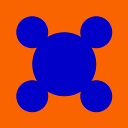
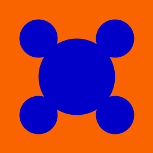  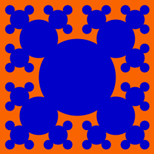 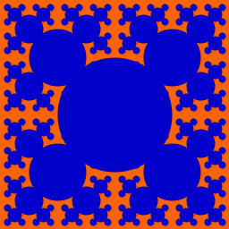
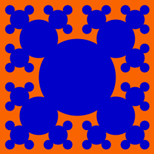 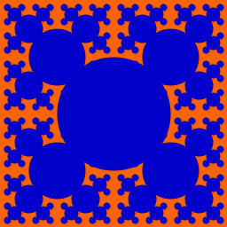

Each pattern is built entirely out of filled in circles. The pattern can be described recursively as a single filled circle, with four patterns of one lesser depth and half the size, offset to the northwest, northeast, southwest and southeast.
Design: At this point we're ready to define our recurrence more precisely. When designing recursive algorithms, it's critical that you think about how your recurrence works not just at the top level, but also at subsequent levels. It's easy to define a recurrence that does what you intend on the first step, or even the first few steps, but then breaks down on deeper interations.
In this case, it's tempting to simply say that the largest circle is drawn centered halfway from top to bottom and side to side, and the next recursive calls are made centered at a quarter width by a quarter height, a quarter width by three quarters height, etc. Unfortunately, that description doesn't lend itself to a useful recurrence. What happens now when the lower-right subproblem is solved recursively?
To deal with this, we need a more general description. In particular, try to figure out what it would mean to draw this pattern with depth d, centered at position (x,y), with a size of r. Note that you shouldn't assume x and y correspond to the middle of the canvas, because in many recursive calls they won't. Similarly, don't assume that r is at all related to x or y. Figure out the details of the recurrence on your own, and write it down on paper. Be sure to define a base case(s).
Implement, Test, and Maintain: Now create a function called bubbles that generates this pattern. You'll need to decide upon a few things. In particular, what parameters will this function take in? And what will the initial call to this function look like? If something goes wrong, find the smallest depth at which things break down and trace through what your program is doing. You may find you've implemented your design incorrectly, or you may need to revisit the algorithm itself. Once it's working, make sure your function throw exceptions when appropriate, and comment your code.
Carpet
Understanding: The carpet pattern, also known as Sierpinski's carpet, is pretty similar to the bubbles pattern. The key differences are that the core geometric element of the image is a square (rather than a circle), there are 8 recursive calls (as opposed to 4), and each square has one third the height and width of its region (as opposed to one half). See the examples below.


Design: Try to replicate the process we used for bubbles. In particular, figure out what it would mean to draw this pattern with depth d, centered at position (x,y), with a size of r. Again, don't assume that x and y correspond to the middle of the canvas or that r is related to x or y. And most importantly, write your solution down on paper.
Implement, Test, and Maintain: Now create a function called carpet that generates this pattern. Test and comment as usual.
Gasket
Understanding: The gasket pattern, also known as Sierpinski's triangle or Sierpinski's gasket, is built out of trianges. The depth 1 figure includes a single triangle, with lower corners at the lower corners of the pane, and the upper corner centered at the top middle. Each subsequent depth replaces the existing triangle with 3 triangles, each of half the width and half the height as shown below.
 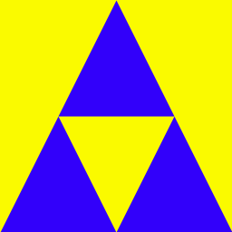
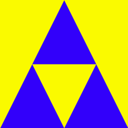 
 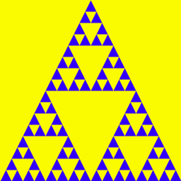
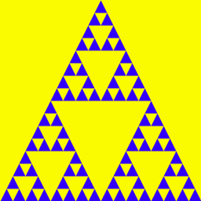 
Design: There are two distinct recurrences we could use to create this pattern, depending on how we think about the forms. Option 1: draw the carpet (the blue parts). In this case, notice that for a given pattern, all the triangles are of the same size. Thus the creation of triangles only happens as a base case in our recurrence. Option 2: draw the holes (the yellow parts) on top of a single blue triangle. In this case, a recursive call at any depth involves the creation of a triangle (in addition to additional recursive calls, so long as the depth is positive).
Which approach you take is up to you. Either way, you'll need to write out a recursive description of the pattern before you begin coding. The key thing to think about is how a given recursive call in turns makes its own recursive calls. Think about how you'd describe making a the gasket pattern if the outer triangle has corners at positions A, B and C.
Implement, Test, and Maintain: Now create a function called gasket that generates this pattern. What parameters does it require? You'll want to make use of the drawPolygonFill() function, which takes in a single parameter which is a tuple (indicated by paretheses), containing any number of points, represented as pairs of integers (themselves in parentheses). So drawPolygonFill(((a, b), (c, d), (e, f))) would draw a filled in polygon whose first vertex was (a,b), etc. Test and comment as usual.Snowflake
Understanding: Consider the fractal patterns below.
 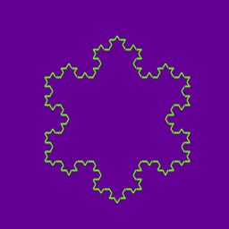 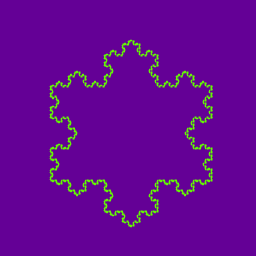
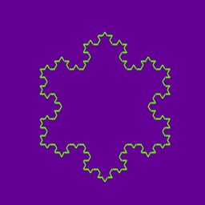 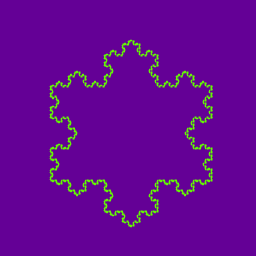 
The snowflake is best understood by thinking about one of the three major sides of the snowflake (for example, focus on the bottome side of the snowflake below). At it's lowest level, the pattern is just a line. At an arbitrary depth, four recurisve calls are made at a depth that is one lesser, with a length that is one third of the current length. Between each of the four calls is a rotation (which will be some multiple of 60 degrees (and may be negative)). To get the whole snowflake, you simply need to make 3 snowflake sides.
Implement, Test, and Maintain: Create a function called snowflake that generates this pattern. What parameters does it require? Test and comment as usual. Below are some picture functions you may find useful.rotate(theta) # rotate pen theta degrees clockwise drawForward(d) # draw a length-d line from the current position in the current direction. setPosition(x,y) # move the pen to position (x,y)
Handin
If you followed the Honor Code in this assignment, insert a paragraph attesting to the fact within one of your .py files.
I affirm that I have adhered to the Honor Code in this assignment.
You now just need to electronically handin all your files. As a reminder
% cd # changes to your home directory
% cd cs150 # goes to your cs150 folder
% handin # starts the handin program
# class is 150
# assignment is 6
# file/directory is lab06
% lshand # should show that you've handed in something
You can also specify the options to handin from the command line
% cd ~/cs150 # goes to your cs150 folder
% handin -c 150 -a 6 lab06
File Checklist
You should have submitted the following files:
recnum.py recstr.py recpic.py picture.pyIf you're working with a partner, they will submit recpic.py (with both of your names) and picture.py, and you will submit a README with their name.